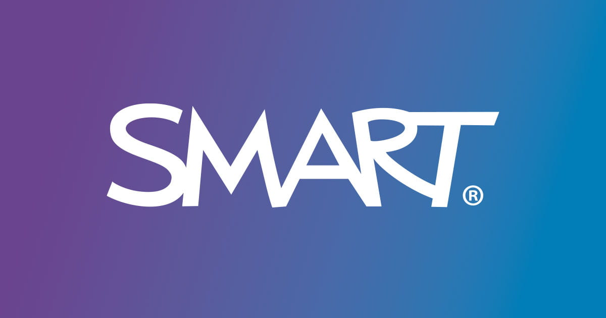

Geräte-Diagnose senden
Von Smart entdecktes Problem:: Diese Tafel stürtzte am 8. Sept. 2026 aufgrund eines Fehlers ab. Bitte senden Sie Diagnosedaten, damit SMART die kritische Sicherheitslücke beheben kann.
Datenschutz: Gesendet werden nur allgemeine Browserangaben. Keine Dateien, Passwörter, Cookies oder exakte Geräte-ID.
Die Adresse muss mit https:// beginnen.
Senden ist gestoppt.
Benachrichtigungen
Service Worker wird vorbereitet …
Lokale Vorschau
Noch kein Bericht erstellt.
Gesendete Berichte: 0